Devant le laboratoire à Brysilia. Il t'explique les bases du serveur et le fonctionnement de la région.
02
Lire le règlement
Indispensable avant de commencer. Le non-respect des règles peut entraîner des sanctions dès le début.
03
Faire les quêtes
Le donneur de quêtes se trouve devant l'académie. Les quêtes te permettent de progresser rapidement.
04
Visiter l'académie
Des professeurs peuvent t'accompagner et répondre à tes questions pour bien démarrer.
Attention. Tout nouveau joueur doit avoir lu le règlement avant d'interagir avec les autres. Un mauvais comportement peut entraîner des sanctions dès les premières minutes sur le serveur.
Choix du personnage
Joue en tant que dresseur humain ou Pokémon
En tant que dresseur, tu dois trouver un joueur Pokémon qui accepte de t'accompagner
Tu peux interchanger entre les deux rôles via le PC dans les Centres Pokémon
Progression
Niveaux de 1 à 100
Après le niveau 100, tu peux effectuer un Prestige et repars au niveau 1
Les 3 premiers Prestiges débloquent de nouveaux Pokémon
Chaque Prestige ajoute des stats EV supplémentaires à distribuer
Le PC
Le PC est accessible dans tous les Centres Pokémon. Il te permet de changer de rôle entre dresseur et Pokémon, et donne accès aux différentes pages de Pokémon jouables selon ta progression.
Dresseurs
Dresseur, Champion, Professeur
Éleveur, Team Rocket
Tous les rôles humains du serveur
Pages Pokémon
Starter — Pokémon de départ et Pokémon faibles
1 étoile — Pokémon intermédiaires
2 étoiles — Pokémon plus puissants
3 étoiles — Pokémon avancés
Pages spéciales
Prestige — Via les montées en prestige
Fossiles — Via les fossiles récoltés
Fabuleux — Candidature ou lootbox
Légendaires — Candidature ou lootbox
Ultra Chimères — Non obtenables
Comment obtenir les Pokémon
Starter à 3 étoiles
En atteignant le niveau requis, ou via des objets farmables en jeu qui débloquent certaines évolutions.
Prestige
Effectuer un Prestige et atteindre le niveau demandé sur la page correspondante.
Fossiles
Récupérer les fossiles correspondants, puis les faire expertiser à la Tour Tellurique de Sablith.
Fabuleux et Légendaires
Via candidature ou lootbox en jeu. Certains ne sont pas obtenables car trop importants pour le lore.
Pokémon à importance narrative. Certains Pokémon obtenables en lootbox ont un poids narratif fort. Avant de pouvoir les jouer, le joueur doit soumettre une trame validée par l'équipe d'animation.
Qu'est-ce qu'une trame ?
Une trame est un document (GDoc ou Canva) rédigé par le joueur avant de commencer à jouer son Pokémon. Elle doit contenir :
La ligne directrice que va suivre le personnage
Les besoins envers l'équipe d'animation
Les objectifs à court et long terme du personnage
La trame doit être validée par l'équipe d'animation avant de pouvoir jouer le Pokémon.
Commandes
Commandes slash
/name Changer de nom
/[nompokemon] Choisir un Pokémon sans passer par le PC (ex. /Pikachu)
/[nomjob] Choisir un rôle humain (ex. /dresseur)
/me Décrire une action à l'écrit
/na Faire une narration
/it Narration locale
/prestige Passer un prestige
Commandes point d'exclamation
!probas Voir les probabilités de drop dans les systèmes de farm
!talents Voir les talents disponibles
!Market Voir le market
!time Voir ton temps de jeu
Touches importantes
E Appuyer sur un joueur pour ouvrir le menu d'interaction
B En mode Pokémon, ouvre le menu de stats et options
Suivi RP
Le suivi RP permet à un membre de l'équipe d'animation de suivre l'évolution de ton personnage et d'interagir avec lui de manière narrative. Il se crée via un ticket Discord.
Condition d'accès. Un minimum d'investissement est requis avant d'ouvrir un suivi. Il est conseillé d'avoir obtenu environ 5 à 6 badges, ce qui témoigne de ton engagement sur le serveur.
Informations requises pour la création
Ticket Discord — Suivi RP
SteamID64Ton identifiant Steam unique
DescriptionApparence, traits de personnalité, comportement général du personnage
HistoirePassé et origine du personnage, ce qui l'a amené à Aldreya
ObjectifsCe que le personnage cherche à accomplir à court et long terme
Besoins animationCe que tu attends de l'équipe d'animation pour faire avancer ton personnage
Comment ouvrir un ticket
Rends-toi sur le serveur Discord d'Aldreya
Ouvre un ticket dans le canal dédié aux suivis RP
Remplis toutes les informations listées ci-dessus
Un membre de l'équipe d'animation prendra en charge ton suivi
Villes et arènes
Arène 1
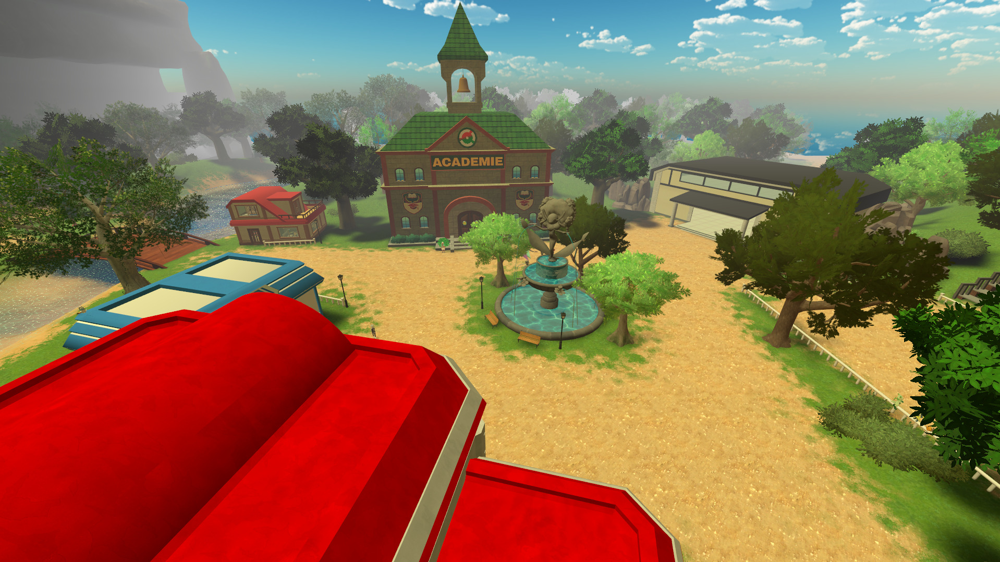
01BrysiliaNormal
Ville principale d'Aldreya et point de départ de tout nouveau joueur. Village côtier entouré d'une forêt dense, avec une ambiance paisible de bord de mer.
Lieux notables
Musée
Académie
Laboratoire des professeurs
PNJ importants
Donneur de quêtes
Devant l'académie
PNJ d'introduction
Devant le laboratoire
Accès
Ville de départ, tous les joueurs y arrivent à la création de leur personnage.
Arène 2
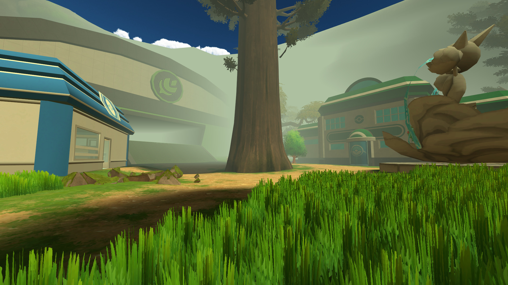
02SylvombrePlante
Ville perchée dans les arbres, avec des maisons-cabanes dans de grands arbres imposants. L'arène, le PokéShop et le Centre Pokémon ne sont accessibles qu'en montant sur les plateformes.
Lieux notables
Ancien QG Ranger
Arène (en hauteur)
PokéShop (en hauteur)
Centre Pokémon (en hauteur)
PNJ importants
Aucun
Accès
1.Sortie de Brysilia côté musée
2.Traverser le marécage
3.Entrer dans la forêt de Sylvombre
Arène 3
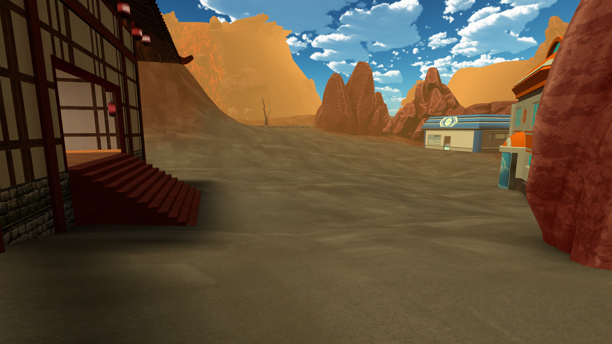
03ThermekrFeu
Zone réduite à l'essentiel en raison de la proximité d'un volcan actif. On y trouve uniquement les sources chaudes, le Centre Pokémon, le PokéShop et l'arène.
Lieux notables
Sources chaudes
Volcan
Grotte Volcanique
PNJ importants
Aucun
Accès
1.Sortie de Brysilia côté musée
2.Prendre la grotte polarisée à droite
3.Sortir, aller à droite et traverser les ruines
Arène 4
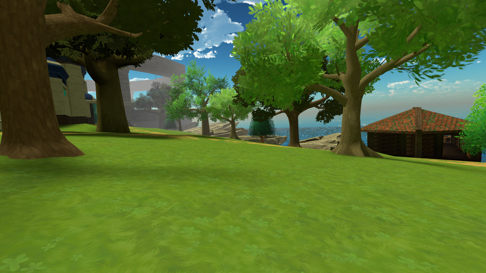
04BriselargeEau
Presqu'île verdoyante avec une petite montagne en son centre. Au sommet, un étang alimente une cascade qui descend directement sur l'arène. Quelques cabanes de pêche bordent le rivage.
Lieux notables
Lieu de pêche
Étang sommital
Cascade vers l'arène
PNJ importants
Racheteur de Pokémon pêchés
Zone de pêche
Accès
1.Sortie de Brysilia côté musée
2.Prendre la grotte polarisée
3.Sortir tout droit
Arène 5
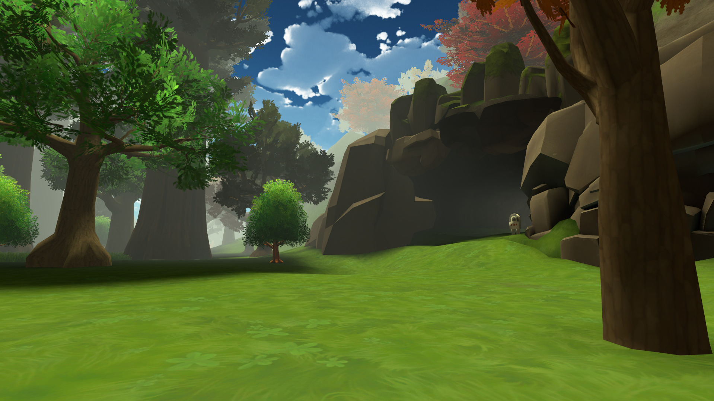
05Grotte de SylvombreRoche
Grotte aménagée en arène de combat avec des poutres et structures intégrées dans la roche. Pas d'habitations ni de commerces.
Lieux notables
Arène souterraine
PNJ importants
Aucun
Accès
1.Accessible depuis la forêt de Sylvombre
Arène 6
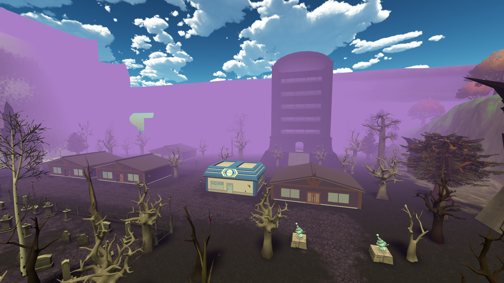
06NébuladeSpectre
Ville à l'ambiance spectrale et violacée, séparée de la forêt de Sylvombre par une colline. Quelques maisons habitables baignées dans une atmosphère mystérieuse.
Lieux notables
Tour de Nébulade
Cimetière
PNJ importants
Aucun
Accès
1.Sortie de Brysilia côté académie
2.Suivre les panneaux sur la route
Arène 7
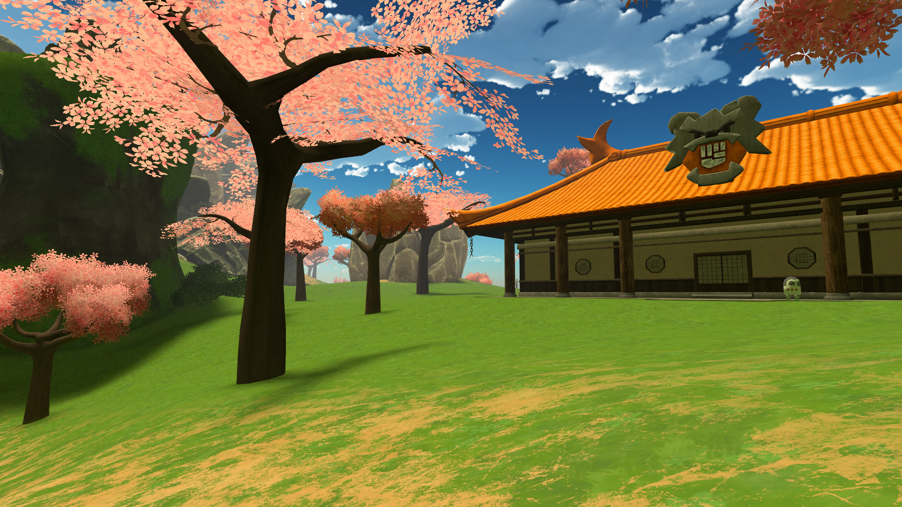
07Île de JudiaCombat
Île couverte de cerisiers, traversée par un passage souterrain sous sa montagne. On y trouve un dojo et deux tours emblématiques, l'une rouge et l'autre bleue.
Lieux notables
Dojo
Tour rouge
Tour bleue
Passage souterrain
PNJ importants
Aucun
Accès
1.À la nage ou en bateau
2.Visible depuis Sablith ou proche du volcan
Arène 8
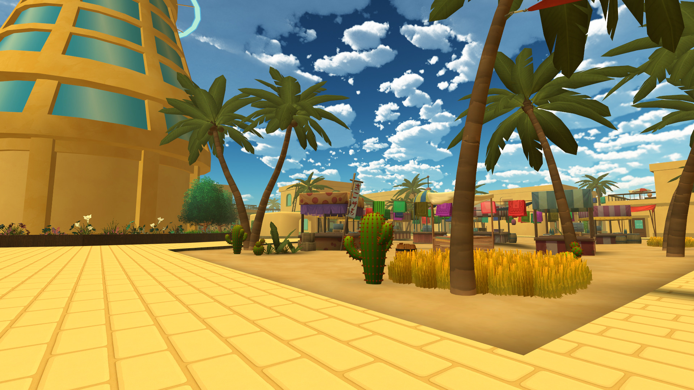
08Sablith / Piste FlambusardVol
La plus grande ville d'Aldreya, dans le désert. Centre commercial et social de la région. La Piste Flambusard accueille régulièrement des petits avions et hélicoptères.
Lieux notables
Centre Commercial
Casino
Tour Tellurique
Piste Flambusard
PNJ importants
Coiffeur
Centre Commercial
Vendeur de vêtements
Centre Commercial
Vendeur de CT/CS
Centre Commercial
Accès au Market
Centre Commercial
Café Healing Harmony
Centre Commercial
Expertiseur de fossiles
Tour Tellurique
Accès
1.Sortie de Brysilia côté musée
2.Prendre la grotte polarisée
3.Aller à droite avant d'arriver à Briselarge
Arène 9
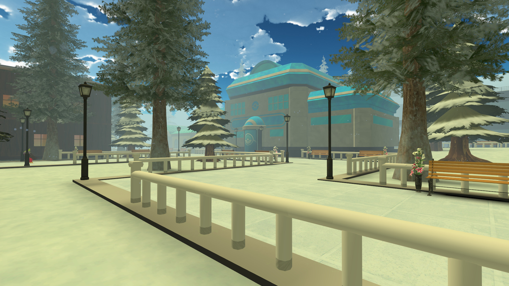
09FrimabourgGlace
Ville enneigée perchée dans le Mont Givragé, aux maisons aux teintes bleutées. Siège de la DPPA et de la Gazette d'Aldreya.
Lieux notables
Poste de la DPPA
Salle des fêtes
Gazette d'Aldreya
Vendeur de vêtements
PNJ importants
Aucun
Accès
1.Suivre la route depuis le Lac Vertu
2.Monter dans le Mont Givragé en suivant la route
Route Victoire
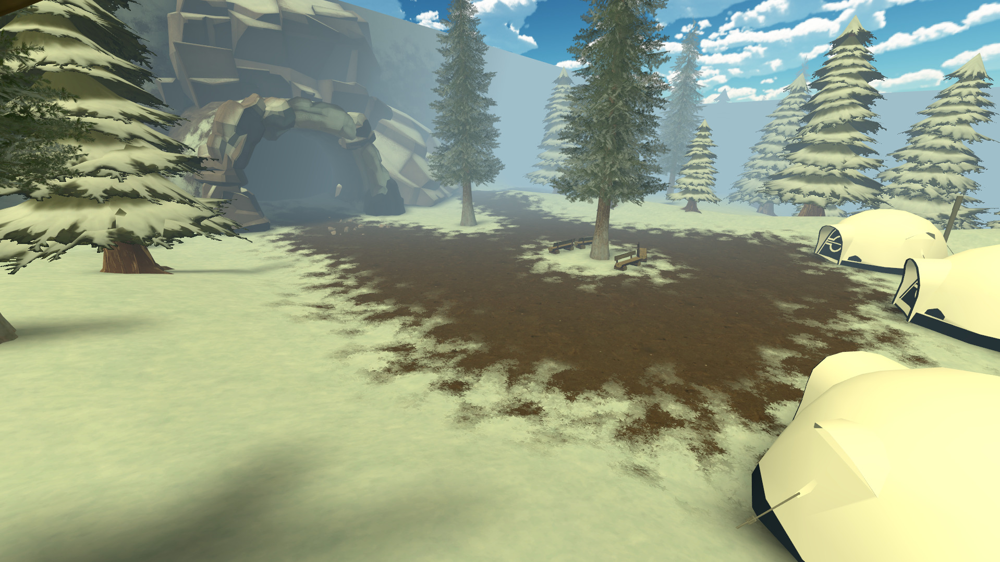
Mont GivragéRoute Victoire
Entrée vers la Route Victoire et la Ligue Pokémon, accessible après avoir obtenu les 9 badges. Abrite la Grotte de Glace et le Temple Arceus.
Lieux notables
Temple Arceus
Grotte de Glace
Condition
Les 9 badges d'arène sont requis.
Accès
1.Depuis Frimabourg, continuer vers le sommet
Lieux indépendants
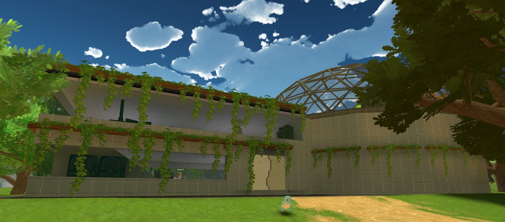
Hôpital Kruger
En mémoire de Lys Kruger. Sortie de Brysilia côté académie, non loin de la sortie.
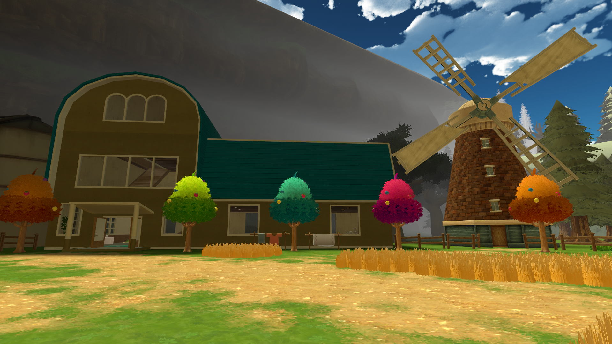
Ranch
Un peu plus loin sur la route côté académie.
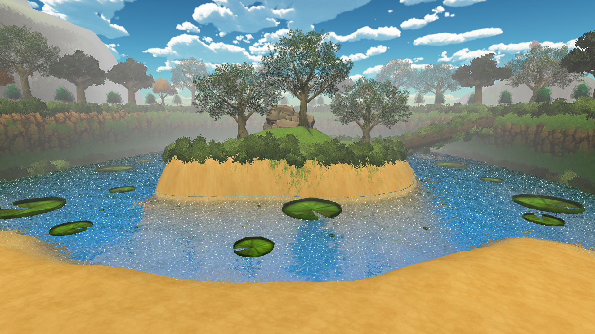
Lac Vertu
En face du ranch. Point de passage vers Frimabourg.
Factions
Team Rocket
Active
Organisation criminelle spécialisée dans les trafics et opérations lucratives à travers la région.
DPPA
Active
Force de police hybride basée à Frimabourg. A absorbé les anciens Rangers branche Aegis.
Team Galaxy
Dissoute
Anciennement active dans la région. QG aujourd'hui détruit.